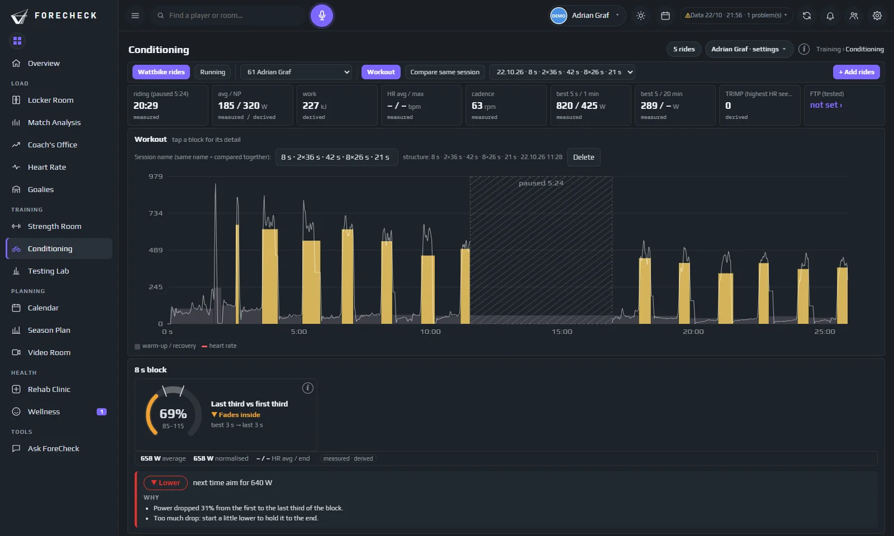

Conditioning · Wattbike
Le travail Off-Ice, analysé pour vous.

Nouveau cette saison
Séances recommandées
iEn savoir plus
Classées par quatre contrôles visibles : moins bien que d'habitude, en baisse, important en match, assez frais aujourd'hui. Étiquetées ▲ HIGH ou ▽ LOW selon votre semaine.

Wattbike
Chaque sortie intégrée, sans taper un seul chiffre
iEn savoir plus
Les athlètes exportent leur séance Wattbike Hub (TCX) et ForeCheck la lit : puissance, cadence, fréquence cardiaque et structure de la séance, bloc par bloc.
Sorties cette semaine
- #27 F3×6 s · 3×10×10 s56 min
- #5 D15-10-5-5 min55 min
- #14 F4×4 min VO242 min
- #44 DAucune sortie
Répétition par répétition
Voir la fatigue au sein de la série
iEn savoir plus
Les sprints et les intervalles sont découpés automatiquement en répétitions. Première contre dernière répétition, score de décrément et puissance par battement cardiaque montrent si l’athlète a maintenu la qualité.
30 × 10 s · 3 séries de 10
La prochaine fois
Un objectif pour la prochaine séance, pas seulement un rapport
iEn savoir plus
Chaque bloc se termine par une recommandation simple : augmenter, maintenir ou baisser, avec les watts à viser. Une même séance est comparée au fil des semaines.
Recommandation
- Première rép. 433 W, dernière rép. 722 W : le dernier tiers a progressé de 16 % par rapport au premier.
- Score de décrément 12,3 % : chaque répétition est restée proche de la meilleure.
- Vous avez fini plus fort que vous n’avez commencé : démarrez donc au niveau de vos dernières répétitions.
Les questions auxquelles il répond
Ce que vous décidez avec
- L’athlète a-t-il tenu la puissance jusqu’à la dernière répétition ?
- Quel objectif pour la prochaine séance ?
- La condition aérobie progresse-t-elle d’un bloc à l’autre ?
- Qui a sauté son travail Off-Ice cette semaine ?